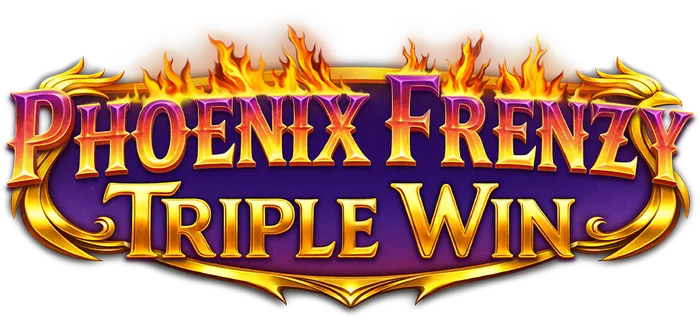

Phoenix Frenzy Triple Win - RTP, análise e onde jogar

| Provedor | Play'n GO |
|---|---|
| Tipo de jogo | Caça-níquel de vídeo |
| Tema | Três fênix, renascimento vulcânico |
| Data de lançamento | 19 de novembro de 2026 |
| Celular | Sim |
Visão geral
A Play'n GO faz três fênix renascerem de uma paisagem vulcânica de lava derretida e montanhas escarpadas. A página oficial do jogo do estúdio anuncia Phoenix Frenzy Triple Win para 19 de novembro de 2026. Cada fênix carrega seu próprio poder: a fênix roxa transforma símbolos em curingas, a fênix azul comanda curingas multiplicadores, e a fênix dourada melhora os símbolos de figura em versões douradas de si mesma.
Acima dos rolos ficam três medidores de ovo flamejante, um para cada fênix. Os orbes misteriosos coloridos que aparecem nos rolos alimentam o medidor correspondente, e ao reuni-los é possível despertar um, dois ou os três recursos Renascimento. Cada Renascimento concede 8 rodadas grátis: o Renascimento roxo transforma de 1 a 5 figuras nos rolos 2 a 5 em curingas, o Renascimento azul melhora os curingas para curingas duplos x2, e o Renascimento dourado melhora uma figura para símbolos de fênix dourada, com mais 3 orbes reativando 3 rodadas extras e despertando outra figura, até 30 rodadas grátis.
A virada da Vitória Tripla é que os renascimentos podem se combinar: roxo mais azul mistura transformações em curinga com multiplicadores, roxo mais dourado mistura curingas com melhorias, e os três juntos acumulam todos os poderes de uma vez (ver FAQ). A página da Play'n GO ainda não publica o RTP nem o prêmio máximo deste título, então confira as informações dentro do jogo quando ele for lançado.
Onde jogar Phoenix Frenzy Triple Win
Phoenix Frenzy Triple Win estará disponível em cassinos online que oferecem jogos da Play'n GO quando for lançado. Comece pelos nossos tops avaliados:
Nigéria | Brasil | México | Quênia | África do Sul | Colômbia
Perguntas frequentes sobre Phoenix Frenzy Triple Win
Quando Phoenix Frenzy Triple Win será lançado?
A página oficial do jogo da Play'n GO indica 19 de novembro de 2026 como a data de lançamento de Phoenix Frenzy Triple Win.
Como funcionam os recursos Renascimento em Phoenix Frenzy Triple Win?
Os orbes misteriosos coloridos que aparecem nos rolos alimentam os três medidores de ovo flamejante acima dos rolos. Ao reuni-los é possível despertar o Renascimento roxo, azul ou dourado, cada um com 8 rodadas grátis: o roxo transforma figuras em curingas, o azul melhora os curingas para multiplicadores x2, e o dourado melhora uma figura para símbolos de fênix dourada com reativações. Dois ou três renascimentos podem se combinar em uma mesma rodada.
Onde posso jogar Phoenix Frenzy Triple Win com dinheiro real?
Phoenix Frenzy Triple Win estará disponível em cassinos que oferecem jogos da Play'n GO quando for lançado. Nossos tops cobrem Nigéria, Brasil, México, Quênia, África do Sul e Colômbia, e incluem apenas operadores que avaliamos.
Phoenix Frenzy Triple Win funciona no celular?
Sim. Como todos os lançamentos da Play'n GO, Phoenix Frenzy Triple Win roda no navegador de celulares e tablets, sem precisar baixar nada.